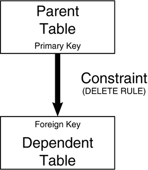

|
|
< Day Day Up > |
|
DB2 Catalog QueriesThe first type of statistics for monitoring DB2 database objects is stored in the DB2 Catalog. These statistics are populated when you run the RUNSTATS utility and are only as up-to-date as the last time you ran RUNSTATS. Additionally, some information in the DB2 Catalog is accurate and useful even if RUNSTATS has never been run. Indeed, much useful information about the DB2 objects you are using can be found in the DB2 Catalog. This section documents in several categories to help you monitor DB2 object usage using the DB2 Catalog:
You can implement these queries using SPUFI or QMF. You should set them up to run as a batch job; otherwise, your terminal will be needlessly tied up executing them. You also would be wise to schedule these queries regularly and then save the output on paper, on microfiche, or in a report storage facility with an online query facility. Each category contains several DB2 Catalog queries you can use for performance monitoring. Each query is accompanied by an analysis that highlights problems that can be trapped by reviewing the output results of the query. In implementing this DB2 Catalog monitoring strategy, I have made the following assumptions:
Having a report of each PLAN_TABLE for each application is also useful. This way, you can check the DB2 Catalog information against the optimizer access path selection information. You can obtain these reports by using the queries shown in Chapter 25 "Using EXPLAIN." Navigational QueriesTo perform database and system administration functions for DB2, often you must quickly locate and identify objects and their dependencies. Suppose that a DBA must analyze a poorly performing query. The DBA has the query and a report of the EXPLAIN for the query, but no listing of available indexes and candidate columns for creating indexes. Or what if a query accessing a view is performing poorly? An analyst must find the composition of the view and the tables (or views) on which it is based. The navigational queries identified in this section provide object listing capabilities and more. The first navigational query provides a listing of the tables in your DB2 subsystem by database, tablespace, and creator:
SELECT T.DBNAME, T.TSNAME, T.CREATOR, T.NAME, T.CREATEDTS,
T.ALTEREDTS, C.COLNO, C.NAME, C.COLTYPE, C.LENGTH,
C.SCALE, C.NULLS, C.DEFAULT, C.COLCARDF,
HEX(C.HIGH2KEY) AS HIGH2KEY, HEX(C.LOW2KEY) AS LOW2KEY, C.STATSTIME, C.FLDPROC
FROM SYSIBM.SYSCOLUMNS C,
SYSIBM.SYSTABLES T
WHERE T.CREATOR = C.TBCREATOR
AND T.NAME = C.TBNAME
AND T.TYPE = 'T'
ORDER BY T.DBNAME, T.TSNAME, T.CREATOR, T.NAME, C.COLNO;
This query is good for identifying the composition of your DB2 tables, down to the data type and length of the columns. The STATSTIME column will show the last time RUNSTATS was run, thereby giving you a clue as to the accuracy of the HIGH2KEY and LOW2KEY values reports. NOTE
If you want to also report on the number of rows in each table, you can use another short query that lists tables and their cardinality:
SELECT CREATOR, NAME, CARDF, NPAGES, STATSTIME
FROM SYSIBM.SYSTABLES
WHERE TYPE IN ('T', 'X')
ORDER BY CREATOR, NAME;
This query will list all normal tables and auxiliary tables. The CARDF column shows the total number of rows in the table or the total number of LOBs in an auxiliary table. The NPAGES column shows the total number of pages that hold rows for this table. NOTE
SELECT CREATOR, NAME, CARDF, NPAGESF,
NUM_DEP_MQTS, STATSTIME
FROM SYSIBM.SYSTABLES
WHERE TYPE = 'M'
ORDER BY CREATOR, NAME;
Another useful navigational query presents an index listing:
SELECT T.DBNAME, T.TSNAME, T.CREATOR, T.NAME, I.CREATOR,
I.NAME, I.INDEXTYPE, I.UNIQUERULE, I.CLUSTERING,
I.CLUSTERRATIOF*100, I.CREATEDTS, I.ALTEREDTS,
I.PIECESIZE, K.COLSEQ, K.COLNAME, K.ORDERING
FROM SYSIBM.SYSKEYS K,
SYSIBM.SYSTABLES T,
SYSIBM.SYSINDEXES I
WHERE (I.TBCREATOR = T.CREATOR AND I.TBNAME = T.NAME)
AND (K.IXCREATOR = I.CREATOR AND K.IXNAME = I.NAME)
ORDER BY 1, 2, 3, 4, 5, 6, 14;
This query lists all indexes in your DB2 subsystem by database, tablespace, table creator, and table. It is similar to the table listing query and can be used to identify the columns that make up each index. NOTE
By viewing the output from these two queries, you can ascertain the hierarchy of DB2 objects (indexes in tables in tablespaces in databases). Additionally, these queries report the time the table or index was initially created and the time each was last altered. This information can be useful in an emergency situation when you need to determine what has been changed. The output from these queries is superb for navigation. The DBA can easily get lost in a flood of production objects. By periodically running these queries and saving the output, a DBA can have a current profile of the environment in each DB2 subsystem that must be monitored. Large installations might have thousands of tables and indexes, making the reports generated by these queries unwieldy. If these queries produce too much information to be easily digested for one report, consider adding a WHERE clause to query only the objects you're interested in at the time. For example, add the following clause to report on information contained in specific databases only:
WHERE T.DBNAME IN ('DATABAS1', 'DATABAS2', DATABAS9')
Eliminating the sample databases (DSN8D61A, DSN8D61P), the DB2 Catalog database (DSNDB06), the RTS database (DSNRTSDB), and any extraneous databases (such as QMF and databases for third-party products) is usually desirable. However, doing so is optional; you may want to monitor everything known to DB2. Although the primary purpose of these two queries is navigation, they also can aid in problem determination and performance tuning. For example, note the following query:
SELECT A.COL1, A.COL2, B.COL3
FROM TABLE1 A,
TABLE2 B
WHERE A.COL1 = B.COL4;
If this query is not performing properly, you would want to know the column types and lengths for COL1 in TABLE1 and COL4 in TABLE2. The type and length for both columns should be the same. If they are not, you can deduce that DB2 is performing a data conversion to make the comparison, which affects performance. (Of course, DB2 V8 mitigates this type of performance problem somewhat by performing conversions within data type families in Stage 1; all previous DB2 versions performed such conversion in Stage 2.) If the data type and length are the same, you would want to see what indexes (if any) are defined on these columns and then analyze the EXPLAIN output. Other significant data might be the uniqueness of each index, the cluster ratio for the index (these items influence the optimizer's choice of access path), data conversion due to online schema change versioning, and the number of tables in a tablespace (can cause performance degradation for non-segmented tablespaces). You can obtain all this information from these reports. You also will need a list of user-defined distinct types (UDTs). UDTs can be used in tables and it will be helpful to know how each UDT is defined as you peruse the table and column listing. To obtain a list of UDTs defined to DB2 issue the following query:
SELECT SCHEMA, NAME, METATYPE, SOURCESCHEMA, SOURCETYPEID, LENGTH,
SCALE, SUBTYPE, ENCODING_SCHEME, CREATEDTS, CREATEDBY
FROM SYSIBM.SYSDATATYPES
ORDER BY SCHEMA, NAME;
The output from this query shows all user-defined distinct types, along with the base data type from which the UDT was sourced. If you need to find all of the UDTs sourced from a base data type, you might want to change the ORDER BY clause as follows: ORDER BY SOURCESCHEMA, SOURCETYPEID; You might also need to examine a listing of the objects used to support your LOB columns. The following query can be used to report on the LOB columns, auxiliary tables, and LOB tablespaces used in your DB2 subsystem:
SELECT T.DBNAME, T.TSNAME, T.CREATOR, T.NAME,
A.AUXTBOWNER, A.AUXTBNAME, A.COLNAME, S.LOG
FROM SYSIBM.SYSTABLESPACE S,
SYSIBM.SYSTABLES T,
SYSIBM.SYSAUXRELS A
WHERE T.DBNAME = S.DBNAME
AND T.TSNAME = S.NAME
AND S.TYPE = 'O'
AND A.TBNAME = T.NAME
AND A.TBOWNER = T.CREATOR
ORDER BY T.DBNAME, T.TSNAME, T.CREATOR, T.NAME,
A.AUXTBOWNER, A.AUXTBNAME;
The LOG column pertains specifically to LOB tablespaces. Examine this column to determine which LOB columns are logged and which are not. Another useful navigational report is the view listing query: SELECT CREATOR, NAME, SEQNO, CHECK, TEXT FROM SYSIBM.SYSVIEWS ORDER BY CREATOR, NAME, SEQNO; The output from this query identifies all views known to DB2 along with the SQL text used to create the view. This information is useful when you're monitoring how SQL performs when it accesses DB2 views. NOTE This report may have multiple rows per view. Monitoring the aliases and synonyms defined for DB2 tables also is desirable. The next query provides a listing of all aliases known to the DB2 subsystem: SELECT CREATOR, NAME, TBCREATOR, TBNAME, CREATEDBY FROM SYSIBM.SYSTABLES WHERE TYPE = 'A' ORDER BY CREATOR, NAME; This one provides a listing of all synonyms: SELECT CREATOR, NAME, TBCREATOR, TBNAME, CREATEDBY FROM SYSIBM.SYSSYNONYMS ORDER BY CREATOR, NAME; By scanning the names returned by the table, view, alias, and synonym listing queries, you can reference the complete repository of objects that can be specified in the FROM clause of SQL SELECT statements. One additional table-related query reports on the temporary tables defined to DB2: SELECT CREATOR, NAME, CREATEDBY FROM SYSIBM.SYSTABLES WHERE TYPE = 'G' ORDER BY CREATOR, NAME; Temporary tables are used to house temporary results in application programs that are required only for the life of the program but can benefit from being accessed using SQL. When referential integrity is implemented for a DB2 application, DBAs, programmers, and analysts must have quick access to the referential constraints defined for the tables of the application. This information is usually in the form of a logical data model depicting the relationships between the tables. However, this information is not sufficient because physical design decisions could have overridden the logical model. Although these design decisions should be documented, having ready access to the physical implementation of the referential integrity defined to your system is wise. This query provides a listing of referential constraints by dependent table:
SELECT F.CREATOR, F.TBNAME, R.REFTBCREATOR, R.REFTBNAME,
F.RELNAME, R.DELETERULE, F.COLSEQ, F.COLNAME
FROM SYSIBM.SYSFOREIGNKEYS F,
SYSIBM.SYSRELS R
WHERE F.CREATOR = R.CREATOR
AND F.TBNAME = R.TBNAME
AND F.RELNAME = R.RELNAME
ORDER BY F.CREATOR, F.TBNAME, R.REFTBCREATOR, R.REFTBNAME;
This one provides a listing of all referential constraints by parent table:
SELECT R.REFTBCREATOR, R.REFTBNAME, F.CREATOR, F.TBNAME,
F.RELNAME, R.DELETERULE, F.COLSEQ, F.COLNAME
FROM SYSIBM.SYSFOREIGNKEYS F,
SYSIBM.SYSRELS R
WHERE F.CREATOR = R.CREATOR
AND F.TBNAME = R.TBNAME
AND F.RELNAME = R.RELNAME
ORDER BY R.REFTBCREATOR, R.REFTBNAME, F.CREATOR, F.TBNAME;
These two queries provide the same information in two useful formats: the first by dependent (or child) table and the second by parent table. For a refresher on these referential integrity terms, refer to Figure 26.1. Figure 26.1. Referential integrity terms. The output from both of these referential integrity queries is useful when you're searching for relationships between tables—both forward from the parent table and backward from the dependent table. This query returns all the information that defines each referential constraint, including the following:
This information is useful for programmers and analysts writing data modification programs. The referential constraints affect both the functions that modify data in tables participating in referential constraints and the SQLCODEs returned to the program. DBAs need this information, with the index listing data described previously, to ensure that adequate indexes are defined for all foreign keys. Knowing all the check constraints used in the DB2 subsystem is also useful. The following query displays all the check constraints and lists the columns to which each check constraint applies: SELECT TBOWNER, TBNAME, CHECKNAME, COLNAME FROM SYSIBM.SYSCHECKDEP ORDER BY TBOWNER, TBNAME, CHECKNAME; To find the actual text of each check constraint, you can issue the following SQL:
SELECT TBOWNER, TBNAME, CHECKNAME, TIMESTAMP,
CHECKCONDITION
FROM SYSIBM.SYSCHECKS
ORDER BY TBOWNER, TBNAME, CHECKNAME;
You can also implement data integrity constraints using triggers. Triggers are assigned to specific tables such that when data changes in the table the trigger code is executed. The following query can help you to find the triggers on a table:
SELECT TBOWNER, TBNAME, SCHEMA, NAME,
TRIGTIME, TRIGEVENT, GRANULARITY, CREATEDTS
FROM SYSIBM.SYSTRIGGERS
WHERE SEQNO = 1
ORDER BY TBOWNER, TBNAME, SCHEMA, NAME;
The following query can help you to find the table if you know the trigger:
SELECT SCHEMA, NAME, TBOWNER, TBNAME,
TRIGTIME, TRIGEVENT, GRANULARITY, CREATEDTS
FROM SYSIBM.SYSTRIGGERS
WHERE SEQNO = 1
ORDER BY SCHEMA, NAME, TBOWNER, TBNAME;
The previous two queries do not return the actual text of the trigger because it can be very long. The column used to store the trigger code, TEXT, is defined as VARCHAR(6000) for V8 or VARCHAR(3460) for V7 and previous versions. Additionally, multiple rows can be required to store very long triggers. That is why the SEQNO column is used to retrieve only one row per trigger instance. If you want to retrieve the trigger text, use the following query:
SELECT SCHEMA, NAME, SEQNO, TBOWNER, TBNAME
TRIGTIME, TRIGEVENT, GRANULARITY, TEXT
FROM SYSIBM.SYSTRIGGERS
ORDER BY SCHEMA, NAME, SEQNO;
Queries to obtain stored procedure and UDF information are presented later in this chapter.
SELECT SCHEMA, OWNER, NAME, SEQTYPE, CREATEDBY, START, INCREMENT,
MINVALUE, MAXVALUE, CYCLE, DATATYPEID, SOURCETYPEID, PRECISION,
CACHE, ORDER, MAXASSIGNEDVAL, CREATEDTS, ALTEREDTS
FROM SYSIBM.SYSSEQUENCES
ORDER BY NAME, SCHEMA;
NOTE Sequences used by IDENTITY columns are listed in the results of this query, too. If the value of SEQTYPE is 'S' it applies to a SEQUENCE object, but if the value is 'I' it applies to an IDENTITY column. For more information on sequences and identity columns, refer to Chapter 5, "Data Definition Guidelines." You also might find it useful to have a list of tables that use IDENTITY columns. The following query produces such a report in order by table name:
SELECT DNAME, DCREATOR, DCOLUMN, DTYPE,
BSCHEMA, BNAME
FROM SYSIBM.SYSSEQUENCESDEP
WHERE DTYPE = 'I'
ORDER BY DNAME, DCREATOR;
Finally, here is the STOGROUP listing query:
SELECT A.NAME, A.VCATNAME, A.SPACE,
A.STATSTIME, A.CREATEDBY, B.VOLID
FROM SYSIBM.SYSSTOGROUP A,
SYSIBM.SYSVOLUMES B
WHERE A.NAME = B.SGNAME
ORDER BY A.NAME;
This query shows each storage group defined to your DB2 subsystem, along with pertinent information about the STOGROUP, such as
Of course, the STOSPACE utility must have been run in order for this query to be useful. If STATSTIME is '0001-01-01-00.00.00.000000' then the STOSPACE utility has never been run. Use caution in reviewing the output from this query because the volumes are not returned in the order in which they were specified when the storage group was created. DB2 does not provide the capability of retrieving the order of the volumes in the STOGROUP. Navigational monitoring is only one level of DB2 performance monitoring using the DB2 Catalog. The next level delves deeper into the physical characteristics of DB2 objects. Physical Analysis QueriesSometimes you must trace a performance problem in a DB2 query to the physical level. Most physical characteristics are specified when DB2 objects are defined and can be modified by SQL ALTER statements. Statistics about other physical characteristics that reflect the state of the data in the physical objects are accumulated by RUNSTATS. This section concentrates on tablespaces and indexes because these objects require a physical data set. You have many options for creating any DB2 object. If poor choices are made, performance can suffer. You will find an analysis of the proper DDL choices in Chapter 5. You can use the physical statistics queries that follow to monitor these options. The physical tablespace statistics query provides a listing of all tablespaces in each database and lists the physical definitions and aggregate statistics detail for each tablespace:
SELECT T.DBNAME, T.NAME, T.STATUS, T.IMPLICIT, T.LOCKMAX, T.LOCKRULE,
T.BPOOL, T.ERASERULE, T.CLOSERULE, T.PARTITIONS, T.TYPE,
T.SEGSIZE, T.DSSIZE, T.NTABLES, T.NACTIVEF, T.PGSIZE,
T.MAXROWS, T.ENCODING_SCHEME, P.CARDF, P.FARINDREF,
P.NEARINDREF, P.PERCACTIVE, P.PERCDROP, P.COMPRESS, P.PAGESAVE,
P.FREEPAGE, P.PCTFREE, P.STORNAME, P.VCATNAME, P.STATSTIME,
P.PARTITION, P.GBPCACHE, P.EXTENTS, P.DSNUM
FROM SYSIBM.SYSTABLESPACE T,
SYSIBM.SYSTABLEPART P
WHERE T.NAME = P.TSNAME
AND T.DBNAME = P.DBNAME
ORDER BY T.DBNAME, T.NAME, P.PARTITION;
NOTE
You will also need to add information about the logical partitioning due to online schema changes (P.LOGICAL_PART and P.LIMITKEY_INTERNAL). Having reported on physical tablespace statistics, the next step is to analyze physical index statistics. The physical index statistics query provides a report of all indexes grouped by owner, along with the physical definitions and aggregate statistics supporting each index:
SELECT I.CREATOR, I.NAME, I.INDEXTYPE, I.UNIQUERULE, I.CLUSTERING,
I.CLUSTERED, I.CLUSTERRATIOF*100, P.PQTY, P.SECQTYI,
I.FIRSTKEYCARDF, I.FULLKEYCARDF, I.NLEAF, I.NLEVELS,
I.PGSIZE, I.ERASERULE, I.CLOSERULE, I.SPACEF,
P.CARDF, P.FAROFFPOSF, P.LEAFDIST, P.NEAROFFPOSF, P.FREEPAGE,
P.PCTFREE, P.STORNAME, P.VCATNAME, P.STATSTIME, P.PARTITION,
P.LEAFFAR, P.LEAFNEAR, P.PSEUDO_DEL_ENTRIES
FROM SYSIBM.SYSINDEXES I,
SYSIBM.SYSINDEXPART P
WHERE I.NAME = P.IXNAME
AND I.CREATOR = P.IXCREATOR
ORDER BY I.CREATOR, I.NAME, P.PARTITION;
NOTE
These reports are invaluable tools for diagnosing performance problems when they happen. Frequently, you also can use them to catch problems before they occur. Review each tablespace and index to determine the CLOSE RULE for it. Objects accessed infrequently or only once per day do not need to remain open. Although pseudo-closing reduces the impact of implicit, behind-the-scenes data set opening and closing, choosing the proper CLOSE RULE is important. Most tablespaces and indexes should use CLOSE YES to take advantage of DB2's improved data set OPEN and CLOSE management techniques. The physical analysis queries are also useful in determining the frequency of reorganization. Monitor the following information:
NOTE NEAROFFPOSF, FAROFFPOSF, and CLUSTERRATIOF apply to clustering indexes only. The PERCDROP column for tablespaces indicates the percentage of space occupied by rows from dropped tables. Non-segmented tablespaces cannot reclaim this space until they are reorganized. The PAGESAVE column for tablespaces indicates the percentage of pages saved (per partition) by using ESA compression. Both the tablespace and index queries display the STATSTIME column. It is crucial because STATSTIME provides a timestamp indicating when RUNSTATS was run to produce the statistical information being reported. Far-off and near-off pages indicate the degree of tablespace or index disorganization. For non-segmented tablespaces, a page is near off if the difference between the page and the next one is between 2 and 15 pages inclusive. For segmented tablespaces, a page is considered near off the present page if the difference between the two pages is between 2 and the SEGSIZEx2. A page is far off if the difference is 16 or greater. NEAROFFPOSF for an index indicates the number of times a different near-off page must be accessed when accessing all the tablespace rows in indexed order. The definition of FAROFFPOSF is the same except that far-off page is substituted for near-off page. NOTE For segmented tablespaces only: After a REORG, the NEAROFFPOSF can be greater than 0 if there are multiple space map pages. NEAROFFPOSF and FAROFFPOSF are measures to gauge the organization of the data in the underlying table. It assumes that the index in question is the clustering index. Given that assumption, the values indicate how many of the rows in the table are ill-placed. If the index is not the clustering index, FAROFFPOSF and NEAROFFPOSF are not useful as indicators of data organization. The NEARINDREF and FARINDREF columns for a tablespace indicate the number of rows that have been relocated either near (2 to 15 pages) or far away (16 or more pages) from their original location. This relocation can occur as the result of updates to variable length rows (that is, rows with VARCHAR columns, tables with EDITPROCs, or compressed rows). LEAFDIST helps determine the relative efficiency of each index. LEAFDIST indicates the average number of pages between successive index leaf pages. The more intervening pages, the less efficient the index will be. Finally, you can use CLUSTERRATIOF to determine the overall condition of the index as it corresponds to the physical order of the tablespace data. The more clustered an index is, the greater its conformance to the order of the rows as they are physically aligned in the tablespace. A cluster ratio of 100% indicates that the index and the tablespace ordering matches exactly. As the cluster ratio diminishes, access that uses the index becomes less efficient. NOTE CLUSTERRATIOF for partitioned indexes can be found in SYSIBM.SYSINDEXSTATS. This CLUSTERRATIOF is at the partition level and can help to determine if only a subset of the partitions needs to be reorganized. Table 26.1 is a guide to using this information to determine how frequently tablespaces and indexes should be reorganized. A + indicates that you should REORG more frequently as the value in that column gets larger. A – indicates that you should REORG more frequently as the value gets smaller. As the number of + or – increases, the need to REORG becomes more urgent. For example, as PERCDROP gets larger, the need to REORG is very urgent, as indicated by five plus signs. For CLUSTERRATIOF, as the value gets smaller, the need to REORG increases.
You also can use the physical analysis queries to learn at a glance the physical characteristics of your tablespaces and indexes. For example, these queries return the following:
Analyzing the tablespace and index space usage also is useful. By monitoring PERCACTIVE, FREEPAGE, and PCTFREE and using a data set allocation report or a LISTCAT output, you can review and modify space utilization. Generally, when PERCACTIVE is low, you should redefine the tablespace or index with a smaller PRIQTY, a smaller SECQTY, or both. Free space can be changed as well. In any event, you must monitor these reports with the data set statistics. Also remember that changes to space characteristics do not take effect unless the tablespace being altered is reorganized and the index is reorganized or recovered. Following are notes on using LISTCAT with DB2 data sets. LISTCAT reads the ICF catalog and displays pertinent values for data sets. The values returned by LISTCAT are generally useful for determining the overall status of a data set. However, when the data set is a VSAM data set used by DB2 for tablespaces or indexes, only some fields in the ICF catalog are accurate. They are as follows:
CAUTION If the PREFORMAT option is used, the high used RBA value can be misleading. You can analyze DB2 tablespace and index DASD use further with the following queries. You can monitor tablespace DASD use by analyzing the results of this query:
SELECT T.DBNAME, T.NAME, T.PARTITIONS, T.NTABLES, T.NACTIVEF, T.SPACE,
P.PARTITION, P.PQTY, P.SECQTYI, P.STORTYPE, P.STORNAME, P.VCATNAME,
(CASE NACTIVEF WHEN 0 THEN 0
ELSE (100*T.NACTIVEF*T.PGSIZE)/T.SPACE END) AS SPACEUSED
FROM SYSIBM.SYSTABLESPACE T,
SYSIBM.SYSTABLEPART P
WHERE T.DBNAME = P.DBNAME
AND T.NAME = P.TSNAME
ORDER BY 1, 2, 3, 4, 5, 6, 7, 8;
NOTE For partitioned tablespaces, consider joining to the SYSIBM.SYSTABSTATS table to get the statistics by partition. NOTE
You can monitor index disk storage usage by analyzing the results of the following query:
SELECT I.CREATOR, I.NAME, I.INDEXTYPE, I.INDEXSPACE, I.SPACE, I.PGSIZE,
P.PARTITION, P.PQTY, P.SECQTYI, P.STORTYPE, P.STORNAME, P.VCATNAME
FROM SYSIBM.SYSINDEXES I,
SYSIBM.SYSINDEXPART P
WHERE I.NAME = P.IXNAME
AND I.CREATOR = P.IXCREATOR
ORDER BY 1, 2, 3, 4, 5, 6, 7;
These queries return information about only the particular object's DASD space use. The index DASD use query simply repeats the information from the previous physical index statistics query, presenting only DASD space use information. The tablespace DASD query adds a calculation column: [(100*T.NACTIVEF*T.PGSIZE)/T.SPACE] CAUTION Several factors can cause the previous queries to be inaccurate. The SPACE values are only collected for STOGROUP-defined objects that have not been archived by SMS. Furthermore, if the PREFORMAT option is used, the space information might be misleading. The CASE expression is used to eliminate the possibility of dividing by zero. The SPACE column in SYSIBM.SYSTABLESPACE can be zero if the STOSPACE utility has not been run or if the tablespace was not defined using STOGROUPs. This calculation shows the percentage of the tablespace being utilized. This number should be monitored to determine a tablespace's DASD requirements. If this number remains below 75% for an extended time, and little growth is expected, decrease the space and reorganize the tablespace, or use DSN1COPY to migrate rows to a smaller data set. If the number is 100% or close to it, and growth is expected, increase the space and reorganize. The final physical statistics query presented here is the column value occurrence query:
SELECT T.DBNAME, T.TSNAME, D.TBOWNER, D.TBNAME,
D.NAME, D.FREQUENCYF, D.COLVALUE, D.STATSTIME
FROM SYSIBM.SYSCOLDIST D,
SYSIBM.SYSTABLES T
WHERE D.TBOWNER = T.CREATOR
AND D.TBNAME = T.NAME
AND D.TYPE = 'F'
ORDER BY T.DBNAME, T.TSNAME, D.TBOWNER, D.TBNAME, D.NAME;
Because DB2 enables non-uniform distribution statistics (NUDS) to be collected for groups of multiple columns, the information in the NAME column is the first column in the grouping of columns in the "key." Also, FREQUENCY changed to FREQUENCYF (an integer column changed to a floating-point column). CAUTION Prior to DB2 V3, NUDS were stored in SYSFIELDS instead of SYSCOLDIST. If SYSIBM.SYSFIELDS was never purged after migrating to later versions of DB2, old NUDS still may be stored in SYSFIELDS, but not used. These artifacts can be misleading if misconstrued to be current. These queries display the non-uniform distribution statistics stored in the DB2 Catalog for specific columns of each table. The output is arranged in order by database, tablespace, table creator, and table name. The output includes as many as 10 of the most frequently occurring values for table columns that are the first column of the index key. The data shows the column value along with the percentage of times (multiplied by 100) it occurs for that column. This information is useful for tuning dynamic SQL queries. DB2 can choose a different access path for the same SQL statement when predicates contain literals for columns with distribution statistics. The optimizer uses this occurrence information to calculate filter factors. The higher the number of occurrences, the fewer rows the optimizer assumes it can filter out. Column values that appear in this report therefore could require SQL tuning. After this level of performance analysis has been exhausted, you must broaden the scope of your tuning effort. Doing so involves analyzing SQL statements in application programs and possibly building new indexes or changing SQL in application queries. Partition Statistics QueriesPartition-level statistics are accumulated by RUNSTATS to enable the optimizer to make query parallelism decisions. SYSIBM.SYSCOLDISTSTATS contains partition-level, non-uniform distribution statistics. RUNSTATS collects values for the key columns of each partitioned index. You can use the following query in conjunction with the column value occurrence query presented earlier:
SELECT T.DBNAME, T.TSNAME, D.PARTITION, D.TBOWNER,
D.TBNAME, D.NAME, D.FREQUENCYF, D.COLVALUE, D.STATSTIME
FROM SYSIBM.SYSCOLDISTSTATS D,
SYSIBM.SYSTABLES T
WHERE D.TBOWNER = T.CREATOR
AND D.TBNAME = T.NAME
AND D.TYPE = 'F'
ORDER BY T.DBNAME, T.TSNAME, D.PARTITION,
D.TBOWNER, D.TBNAME, D.NAME;
The information in the NAME column is the first column in the grouping of columns in the "key." Be sure to label the results of the queries in this section as partition-level statistics so that they are not confused with the equivalent non-partitioned reports discussed in previous sections. The results of the queries in the previous section depicted all tablespaces and indexes, whether partitioned or not. Additional statistics are maintained at the partition level for partitioned tablespaces and indexes. Partition-level physical statistics queries can be issued to retrieve these statistics. The following query provides a report of partitioned tablespaces only, by database, listing the partition-level statistics for each tablespace partition:
SELECT DBNAME, TSNAME, OWNER, NAME, PARTITION, NACTIVE,
CARDF, PCTPAGES, PCTROWCOMP, STATSTIME
FROM SYSIBM.SYSTABSTATS
ORDER BY DBNAME, TSNAME, NAME, PARTITION;
You can issue a partition-level physical index statistics query to retrieve partition statistics for partitioning indexes and DPSIs. The following query provides a report of partitioned indexes only, listing the partition-level statistics for each partition:
SELECT OWNER, NAME, PARTITION, CLUSTERRATIOF, FIRSTKEYCARDF,
FULLKEYCARDF, NLEAF, NLEVELS, KEYCOUNTF, STATSTIME
FROM SYSIBM.SYSINDEXSTATS
ORDER BY OWNER, NAME, PARTITION;
You can analyze the results of the tablespace and index partition-level statistics reports to help you determine whether query parallelism could enhance performance of queries accessing these partitioned tablespaces. Programmer's Aid QueriesOften, you must determine which plans and packages are in a DB2 subsystem. The following programmer's aid queries help you keep this information accurate. Plans can contain DBRMs, packages, or both. The following query lists the plans that contain DBRMs and the DBRMs they contain:
SELECT P.NAME, P.CREATOR, P.BOUNDBY, P.BOUNDTS, P.ISOLATION,
P.VALID, P.OPERATIVE, P.ACQUIRE, P.RELEASE, P.EXPLAN,
P.GROUP_MEMBER, P.DYNAMICRULES, P.REOPTVAR, P.KEEPDYNAMIC,
P.OPTHINT, D.NAME, D.PDSNAME, D.HOSTLANG, D.PRECOMPTS
FROM SYSIBM.SYSPLAN P,
SYSIBM.SYSDBRM D
WHERE P.NAME = D.PLNAME
ORDER BY P.NAME, D.NAME, D.PRECOMPTS;
The next programmer's aid query lists all plans that contain packages and the packages they contain. Remember that packages are composed of a single DBRM.
SELECT P.NAME, P.CREATOR, P.BOUNDBY, P.BOUNDTS, P.ISOLATION,
P.VALID, P.OPERATIVE, P.ACQUIRE, P.RELEASE, P.EXPLAN,
P.GROUP_MEMBER, P.DYNAMICRULES, P.REOPTVAR, P.KEEPDYNAMIC,
P.OPTHINT, K.LOCATION, K.COLLID, K.NAME, K.TIMESTAMP
FROM SYSIBM.SYSPLAN P,
SYSIBM.SYSPACKLIST K
WHERE P.NAME = K.PLANNAME
ORDER BY P.NAME, K.LOCATION, K.COLLID, K.NAME, K.TIMESTAMP;
You can use the following query to track the DBRM libraries and packages. It details DBRM information for all packages. Although the DBRM name and the package name are equivalent, and a one-to-one correlation exists between packages and DBRMs, monitoring the DBRM information for each package is useful.
SELECT COLLID, NAME, CREATOR, QUALIFIER, TIMESTAMP,
BINDTIME, ISOLATION, VALID, OPERATIVE, RELEASE,
EXPLAIN, PCTIMESTAMP, PDSNAME, VERSION,
GROUP_MEMBER, DEFERPREPARE, DYNAMICRULES, REOPTVAR, KEEPDYNAMIC
FROM SYSIBM.SYSPACKAGE
ORDER BY COLLID, NAME, VERSION;
You can use the output from these three queries to track the composition and disposition of all DB2 plans and packages. For example, you can determine whether a plan or package is valid and operative. Invalid and inoperative plans require rebinding (and possible program changes) before execution. You can check on the parameters used to bind the plan or package, such as the isolation level specified (for example, CS versus RR versus UR) or whether reoptimization is available for dynamic SQL (REOPTVARS). The OPTHINT column identifies those plans using an optimization hint as input to the bind process. These queries should be used to monitor your bind parameters to ensure that they are specified as outlined in Chapter 13, "Program Preparation." Finally, you can trace -818 SQLCODEs by checking PRECOMPTS against the date and time stored for the appropriate program load module. Another query that may be useful is to determine which plan and packages have SQL statements that use explicit, statement-level dirty reads (isolation UR). You can use the following queries to find these plans and packages. Use this query to find plans containing SQL using the WITH 'UR' clause:
SELECT DISTINCT S.PLNAME
FROM SYSIBM.SYSPLAN P,
SYSIBM.SYSSTMT S
WHERE P.NAME = S.PLNAME
AND S.ISOLATION = 'U'
ORDER BY S.PLNAME;
Use this query to find packages containing SQL using the WITH 'UR' clause:
SELECT DISTINCT P.COLLID, P.NAME, P.VERSION
FROM SYSIBM.SYSPACKAGE P,
SYSIBM.SYSPACKSTMT S
WHERE P.LOCATION = S.LOCATION
AND P.COLLID = S.COLLID
AND P.NAME = S.NAME
AND P.VERSION = S.VERSION
AND S.ISOLATION = 'U'
ORDER BY P.COLLID, P.NAME, P.VERSION;
Three other queries are useful as programmer's aids. The plan dependency query follows:
SELECT D.DNAME, P.CREATOR, P.QUALIFIER, P.VALID, P.ISOLATION,
P.ACQUIRE, P.RELEASE, P.EXPLAN, P.PLSIZE, D.BCREATOR,
D.BNAME, D.BTYPE
FROM SYSIBM.SYSPLANDEP D,
SYSIBM.SYSPLAN P
WHERE P.NAME = D.DNAME
ORDER BY D.DNAME, D.BTYPE, D.BCREATOR, D.BNAME;
Likewise, the package dependency query can be quite useful:
SELECT P.COLLID, D.DNAME, P.CONTOKEN, P.CREATOR,
P.QUALIFIER, P.VALID, P.ISOLATION, P.RELEASE,
P.EXPLAIN, P.PKSIZE, D.BQUALIFIER, D.BNAME, D.BTYPE
FROM SYSIBM.SYSPACKDEP D,
SYSIBM.SYSPACKAGE P
WHERE P.NAME = D.DNAME
AND P.COLLID = D.DCOLLID
AND P.CONTOKEN = D.DCONTOKEN
ORDER BY P.COLLID, D.DNAME, P.CONTOKEN, D.BTYPE, D.BQUALIFIER,
D.BNAME;
These queries detail the DB2 objects used by every DB2 plan and package. When database changes are needed, you can analyze the output from these queries to determine which packages and plans might be affected by structural changes. Finally, programmers may need to know what stored procedures and user-defined functions are available and how they are defined. This query can be used to gather information about DB2 stored procedures:
SELECT SCHEMA, NAME, LANGUAGE, PROGRAM_TYPE, SPECIFICNAME,
COLLID, PARAMETER_STYLE, ASUTIME, SQL_DATA_ACCESS,
DBINFO, COMMIT_ON_RETURN, STAYRESIDENT, RUNOPTS,
PARM_COUNT, EXTERNAL_ACTION, RESULT_SETS, WLM_ENVIRONMENT,
WLM_ENV_FOR_NESTED, EXTERNAL_SECURITY
FROM SYSIBM.SYSROUTINES
WHERE ROUTINETYPE = 'P'
ORDER BY SCHEMA, NAME;
For user-defined function information, execute the following query:
SELECT SCHEMA, NAME, LANGUAGE, SPECIFICNAME, FUNCTION_TYPE, ORIGIN,
SOURCESCHEMA, SOURCESPECIFIC, DETERMINISTIC, NULL_CALL,
CAST_FUNCTION, SCRATCHPAD, SCRATCHPAD_LENGTH, FINAL_CALL,
PARALLEL, PROGRAM_TYPE, COLLID, PARAMETER_STYLE, SQL_DATA_ACCESS,
DBINFO, STAYRESIDENT, RUNOPTS, PARM_COUNT, EXTERNAL_ACTION,
WLM_ENVIRONMENT, WLM_ENV_FOR_NESTED, EXTERNAL_SECURITY,
ASUTIME, IOS_PER_INVOC, INSTS_PER_INVOC, INITIAL_IOS, INITIAL_INSTS,
CARDINALITY, RESULT_COLS
FROM SYSIBM.SYSROUTINES
WHERE ROUTINETYPE = 'F'
ORDER BY SCHEMA, NAME;
The next section takes this form of DB2 performance monitoring to the next level, incorporating DB2 Catalog monitoring with EXPLAIN. Application Efficiency QueriesThe application efficiency queries combine the best of EXPLAIN monitoring with the best of DB2 Catalog monitoring. The reports produced by these queries show many potential performance problems. By combining the DB2 Catalog information with the output from EXPLAIN, you can identify a series of "problem queries." These problem queries are grouped into two categories: tablespace scans and index scans. DB2 scans data sets to satisfy queries using tablespace scans and index scans. A tablespace scan reads every page in the tablespace and does not use an index. An index scan might or might not read every index subpage. The tablespace scan query follows:
SELECT E.APPLNAME, E.PROGNAME, E.QUERYNO, E.TNAME,
T.NPAGES, E.TIMESTAMP, S.SEQNO, S.TEXT
FROM ownerid.PLAN_TABLE E,
SYSIBM.SYSTABLES T,
SYSIBM.SYSSTMT S
WHERE ACCESSTYPE = 'R'
AND (T.NPAGESF > 50 OR T.NPAGESF < 0)
AND T.NAME = E.TNAME
AND T.CREATOR = E.CREATOR
AND S.NAME = E.PROGNAME
AND S.PLNAME = E.APPLNAME
AND S.STMTNO = E.QUERYNO
ORDER BY E.APPLNAME, E.PROGNAME, E.TIMESTAMP DESC,
E.QUERYNO, S.SEQNO;
The following is the index scan query:
SELECT E.APPLNAME, E.PROGNAME, E.QUERYNO, I.NAME, I.NLEAF,
I.COLCOUNT, E.MATCHCOLS, E.INDEXONLY, E.TIMESTAMP,
S.SEQNO, S.TEXT
FROM ownerid.PLAN_TABLE E,
SYSIBM.SYSINDEXES I,
SYSIBM.SYSSTMT S
WHERE E.ACCESSTYPE = 'I'
AND I.NLEAF > 100
AND E.MATCHCOLS < I.COLCOUNT
AND I.NAME = E.ACCESSNAME
AND I.CREATOR = E.ACCESSCREATOR
AND S.NAME = E.PROGNAME
AND S.PLNAME = E.APPLNAME
AND S.STMTNO = E.QUERYNO
ORDER BY E.APPLNAME, E.PROGNAME, E.TIMESTAMP DESC,
E.QUERYNO, S.SEQNO;
Because these queries usually take a long time to run, they should not be executed in parallel with heavy production DB2 processing or during the online DB2 transaction window. To ensure that the scan queries operate efficiently, make sure that the PLAN_TABLE used in each query does not contain extraneous data. Strive to maintain only the most recent EXPLAIN data from production BIND jobs in the table. Also, keep EXPLAIN information only for plans that must be monitored. Executing RUNSTATS on your PLAN_TABLES also can increase the performance of these queries. The tablespace scan report lists queries that scan more than 50 pages and queries that access tables without current RUNSTATS information. If NPAGES is -1 for any table, RUNSTATS has not been run. A RUNSTATS job should be executed as soon as possible, followed by a rebind of any plan that uses this table. Everything else on this report should be monitored closely. For tables just over the 50-page threshold, the effect on performance is uncertain. As the number of scanned pages increases, so does the potential for performance problems. The 50-page cutoff is arbitrary; you might want to redefine it as you gauge the usefulness of the information returned. If you monitor only large tables, you might want to increase this number to 100 (or larger). This number varies according to your shop's definition of a "large table." If you have a small buffer pool (fewer than 1,000 buffers), you might want to reduce this number. For tables with 20 or more pages, try to create indexes to satisfy the predicates of each query. Keep in mind, though, that creating an index for every predicate is not always possible. There is a trade-off between read efficiency and update efficiency as the number of indexes on a particular table increases. The index scan query reports on all SQL statements that scan more than 100 index leaf pages on which a match on the columns in the query is not a complete match on all index columns. As the number of matching columns increases, performance problems decrease. The worst case is zero matching columns, but even this number might be acceptable for an index-only scan. You might need to modify the 100-page cutoff value for the index scan query too. You might want to use the same number as the one chosen for the tablespace scan report (or some other value that works well in your environment). Although every query listed in these reports is not necessarily a problem query, you should closely monitor each one. Corrective actions for poorly performing queries are outlined in Part V, "DB2 Performance Tuning." Historical Queries
You can use these history tables to identify trends, patterns, and issues by comparing old statistics to current statistics. For example, run the following query to identify tablespace partitions that have grown in extents between RUNSTATS executions:
SELECT P.DBNAME, P.TSNAME, P.PARTITION, P.PQTY, P.SECQTYI,
P.NEARINDREF, P.FARINDREF, P.PERCACTIVE, P.PERCDROP,
P.PAGESAVE, P.SPACEF, P.EXTENTS, P.STATSTIME
FROM SYSIBM.SYSTABLEPART P,
SYSIBM.SYSTABLEPART_HIST H
WHERE P.EXTENTS > H.EXTENTS
AND P.DBNAME = H.DBNAME
AND P.TSNAME = H.TSNAME
AND P.PARTITION = H.PARTITION
AND H.STATSTIME = (SELECT MAX(STATSTIME)
FROM SYSIBM.SYSTABLEPART_HIST H2
WHERE H2.DBNAME = P.DBNAME
AND H2.TSNAME = P.TSNAME
AND H2.PARTITION = P.PARTITION
)
ORDER BY P.DBNAME, P.TSNAME, P.PARTITION;
This query joins the history table to the current table for tablespace partition statistics. The subselect is to make sure that we retrieve only the last historical statistic. That is the maximum STATSTIME from SYSIBM.SYSTABLEPART_HIST, because there can be multiple historical rows in the history tables. You can create similar queries for any of the historical tables, checking on changes to any of the statistics (not just EXTENTS). Another interesting historical query you can use is a simple listing of the statistics over time. In this case we will look at index statistics using SYSIBM.SYSINDEXES_HIST:
SELECT TBCREATOR, TBNAME, CREATOR, NAME, STATSTIME,
CLUSTERING, CLUSTERRATIOF, NLEAF, NLEVELS,
FIRSTKEYCARDF, FULLKEYCARDF, SPACEF, AVGKEYLEN
FROM SYSIBM.SYSINDEXES_HIST
ORDER BY TBCREATOR, TBNAME, CREATOR, NAME, STATSTIME DESC;
This query will produce a report of historical statistics for each index in order by the table and index names, and in chronological order from oldest to most recent statistic row. You can examine this report to analyze the number of levels for the index over time, whether or not clustering has changed, and cardinality information over time. Similar reports can be generated for each of the historical statistics tables in the DB2 Catalog. Authorization QueriesYou can implement five types of security in DB2: database security, plan and package security, system-level authorization, security on tables and views, and resource privileges: You can execute the following queries to ascertain the authority granted for each of these types of security. Note that two forms of each query are provided; the authorization information can be returned either in DB2 object (or DB2 resource) order or by the user who possesses the authority. Example . Database authority query:SELECT NAME, GRANTEE, GRANTOR, GRANTEDTS, GRANTEETYPE, CREATETABAUTH, CREATETSAUTH, DBADMAUTH, DBCTRLAUTH, DBMAINTAUTH, DISPLAYDBAUTH, DROPAUTH, IMAGCOPYAUTH, LOADAUTH, REORGAUTH, RECOVERDBAUTH, REPAIRAUTH, STARTDBAUTH, STATSAUTH, STOPAUTH, AUTHHOWGOT FROM SYSIBM.SYSDBAUTH ORDER BY NAME, GRANTEE, GRANTOR; Example . Table authority query:SELECT TCREATOR, TTNAME, SCREATOR, STNAME, GRANTEE, GRANTOR, GRANTEETYPE, UPDATECOLS, ALTERAUTH, DELETEAUTH, GRANTEDTS, INDEXAUTH, INSERTAUTH, SELECTAUTH, UPDATEAUTH, REFCOLS, REFERENCESAUTH, AUTHHOWGOT FROM SYSIBM.SYSTABAUTH ORDER BY TCREATOR, TTNAME, GRANTEE, GRANTOR; Example . Column authority query:SELECT CREATOR, TNAME, COLNAME, PRIVILEGE, GRANTEE, GRANTOR, GRANTEETYPE, TIMESTAMP, GRANTEDTS FROM SYSIBM.SYSCOLAUTH ORDER BY CREATOR, TNAME, COLNAME, GRANTEE; Example . Resource authority query:SELECT QUALIFIER, NAME, OBTYPE, GRANTEE, GRANTOR, GRANTEDTS, USEAUTH, AUTHHOWGOT FROM SYSIBM.SYSRESAUTH ORDER BY GRANTEE, QUALIFIER, NAME, GRANTOR; Example . Routine authority query:SELECT SCHEMA, SPECIFICNAME, ROUTINETYPE, GRANTEE, GRANTEETYPE, EXECUTEAUTH, GRANTEDTS, AUTHHOWGOT FROM SYSIBM.SYSROUTINEAUTH ORDER BY GRANTEE, SCHEMA, SPECIFICNAME, GRANTOR; Example . User authority query:SELECT GRANTEE, GRANTOR, GRANTEDTS, ALTERBPAUTH, BINDADDAUTH, BSDSAUTH, CREATETMTABAUTH, CREATEDBAAUTH, CREATEDBCAUTH, CREATESGAUTH, CREATEALIASAUTH, DISPLAYAUTH, RECOVERAUTH, STOPALLAUTH, STOSPACEAUTH, SYSADMAUTH, SYSCTRLAUTH, SYSOPRAUTH, BINDAGENTAUTH, ARCHIVEAUTH, TRACEAUTH, MON1AUTH, MON2AUTH, AUTHHOWGOT FROM SYSIBM.SYSUSERAUTH ORDER BY GRANTEE, GRANTOR; Example . Plan authority query:SELECT NAME, GRANTEE, GRANTOR, GRANTEDTS, GRANTEETYPE,BINDAUTH, EXECUTEAUTH, AUTHHOWGOT FROM SYSIBM.SYSPLANAUTH ORDER BY NAME, GRANTEE, GRANTOR; Example . Package authority query:SELECT COLLID, NAME, GRANTEE, GRANTOR, CONTOKEN, TIMESTAMP, GRANTEETYPE, AUTHHOWGOT, BINDAUTH, COPYAUTH, EXECUTEAUTH FROM SYSIBM.SYSPACKAUTH ORDER BY COLLID, NAME, GRANTEE, GRANTOR; Example . Sequence authority query:
SELECT SCHEMA, NAME, GRANTEE, COLLID, CONTOKEN, GRANTOR,
GRANTEDTS, GRANTEETYPE, AUTHHOWGOT,
ALTERAUTH, USEAUTH, EXECUTEAUTH
FROM SYSIBM.SYSSEQUENCEAUTH
ORDER BY SCHEMA, NAME, GRANTEE, GRANTOR;
Security is not often associated with performance monitoring, but it can help you determine the following items. If certain types of authority are granted to many users, and security checking becomes inefficient, you might want to grant the authority to PUBLIC. This way, you can reduce the number of entries in the DB2 Catalog, thereby reducing the strain on the DB2 subsystem. Don't grant PUBLIC access, however, if audit regulations or data sensitivity is an issue. In addition, monitoring who can access data can help you determine the potential effect on workload. As the number of users who can access a piece of data increases, the potential for workload and capacity problems increases. DB2 Catalog Query GuidelinesHeed the following advice when implementing DB2 Catalog queries to obtain information about your DB2 environment. Use Queries As a Starting PointThe queries in this chapter are only suggestions. If you want to change the sort order or alter the columns being queried, you can use the queries in this chapter as templates. For example, to determine the table authority granted to users, you can modify the sort order of the table authority query, as shown in the following SQL statement:
SELECT TCREATOR, TTNAME, SCREATOR, STNAME, GRANTEE, GRANTOR,
GRANTEETYPE, UPDATECOLS, ALTERAUTH, DELETEAUTH, GRANTEDTS,
INDEXAUTH, INSERTAUTH, SELECTAUTH, UPDATEAUTH,
REFCOLS, REFERENCESAUTH, AUTHHOWGOT
FROM SYSIBM.SYSTABAUTH
ORDER BY GRANTEE, TCREATOR, TTNAME, GRANTOR;
The reports in this chapter are suggestions that have worked well for me. Changing them to suit your needs is easy because of the ad hoc nature of SQL. Use QMF to Create Formatted ReportsThe queries in this chapter were developed using QMF. You can run them weekly using a batch QMF job. Using the batch job is easier than submitting the queries weekly from QMF or through SPUFI. Simply build batch QMF JCL, incorporate all these queries and forms into a proc, and then run the proc. You can create QMF forms for each query to present the output in a pleasing format. You can change control breaks, different headings for columns, and the spacing between columns. A sample QMF form for the table listing query is presented in Listing 26.1. To create a form for any of the queries in this chapter in QMF, simply type and execute the query. Press F9 to display the form panel and then modify the form. Listing 26.1. Sample QMF Form for the Table Listing QueryFORM.COLUMNS Total Width of Report Columns: 216 NUM COLUMN HEADING USAGE INDENT WIDTH EDIT SEQ 1 _DATABASE BREAK1 1 8 C 1 2 TABLE_SPACE BREAK2 1 8 C 2 3 TABLE_CREATOR BREAK3 1 8 C 3 4 _TABLE BREAK3 1 18 C 4 5 CREATEDTS 1 26 TSI 5 6 ALTEREDTS 1 26 TSI 6 7 COL_NO 1 3 L 7 8 COLUMN_NAME 1 18 C 8 9 COLUMN_TYPE 1 8 C 9 10 COLUMN_LENGTH 1 6 L 10 11 SCALE 1 6 L 11 12 NU_LL 1 2 C 12 13 DF_LT 1 2 C 13 14 COL_CARD 1 8 L 14 15 HIGH2_KEY 1 8 C 15 16 LOW2_KEY 1 8 C 16 17 STATSTIME 1 26 TSI 17 18 FLD_PROC 1 4 C 18 The table listing query is presented again to help you visualize how the QMF form helps to display the query results:
SELECT T.DBNAME, T.TSNAME, T.CREATOR, T.NAME, T.CREATEDTS, T.ALTEREDTS,
C.COLNO, C.NAME, C.COLTYPE, C.LENGTH, C.SCALE, C.NULLS,
C.DEFAULT, C.COLCARDF, HEX(C.HIGH2KEY) AS HIGH2KEY,
HEX(C.LOW2KEY) AS LOW2KEY, C.STATSTIME, C.FLDPROC
FROM SYSIBM.SYSCOLUMNS C,
SYSIBM.SYSTABLES T
WHERE T.CREATOR = C.TBCREATOR
AND T.NAME = C.TBNAME
AND T.TYPE = 'T'
ORDER BY T.DBNAME, T.TSNAME, T.CREATOR, T.NAME, C.COLNO;
Become Familiar with the Data in the DB2 CatalogYou can produce many reports from the DB2 Catalog to aid in performance monitoring. This chapter details some of them. As you become more familiar with the DB2 Catalog and the needs of your application, you can formulate additional queries geared to the needs of your organization. A complete listing and description of the DB2 Catalog tables and columns can be found in the IBM SQL Reference manual (SC26-9944 for Version 7; SC18-7426 for Version 8). Use the DECIMAL Function for ReadabilityWhen retrieving floating point data, such as the columns that end with the letter F, use the DECIMAL function to display the results as a decimal number. For example, SELECT ... DECIMAL(NACTIVEF) ... This will produce more readable query results. Without the DECIMAL function, the results will be displayed as an exponential expression, such as 2.013 * 1012. |
|
|
< Day Day Up > |
|